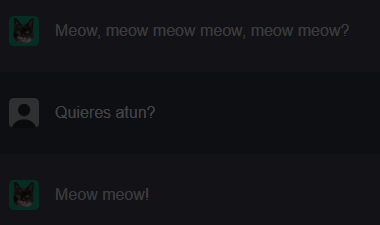

catGPT
T'agraden els gats i vols una ia dedicada a ells? No cerquis més enllà, CatGPT és aquí per a tu! Només sap dir "meow". Pero reaccionarà al contingut que li proporciones.

T'agraden els gats i vols una ia dedicada a ells? No cerquis més enllà, CatGPT és aquí per a tu! Només sap dir "meow". Pero reaccionarà al contingut que li proporciones.

Claude és un model de llenguatge desenvolupat per Anthropic, una empresa d'intel·ligència artificial. Claude és conegut per la seva capacitat de generar text coherent i contextuament rellevant, així com per la seva orientació cap a la seguretat i l'ètica en la IA.